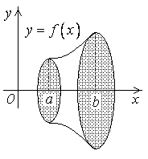

24.2.6. Площадь поверхности вращения
Вычислим – площадь
поверхности, образованной вращением кривой  вокруг
оси
вокруг
оси  .
.
вокруг
оси .
Разделим отрезок  точками
деления
точками
деления  .
.
точками
деления .Точке соответствует
точка на кривой .
соответствует
точка на кривой .Соединим точки на кривой хордами .
При вращении каждая хорда описывает усеченный конус.
Площадь его поверхности:
;
;
;
.
Площадь
поверхности, образованной вращением кривой, заданной функцией y=f(x),
а £ х £ b
–
площадь поверхности, образованной вращением кривой, заданной функцией  ,
, .
.
,.Если дуга задана параметрическими уравнениями  ,,
,,  , то
, то
,, , то Площади
поверхности, образованной вращением кривой, заданной параметрическими уравнениями
х = х (t), у = у (t), t1 £ t £ t2
.
Площади
поверхности, образованной вращением кривой, заданной параметрическими уравнениями
х = х (t), у = у (t), t1 £ t £ t2
.
Если дуга задана в полярных координатах , то
Площадь
поверхности, образованной вращением кривой, заданной в полярных координатах r = r
(j), a £
j £
b
.
Найти площадь поверхности, образованной вращением астроиды вокруг оси.
.Решение:
,
 ,
, .
.Следовательно
Найти площадь поверхности, образованной вращением одной арки
циклоиды вокруг оси .
.Решение:
Дифференцируем ,
.
.
Найти площадь поверхности, образованной вращением кардиоиды вокруг полярной оси.
Решение:
Имеем
,
.
.